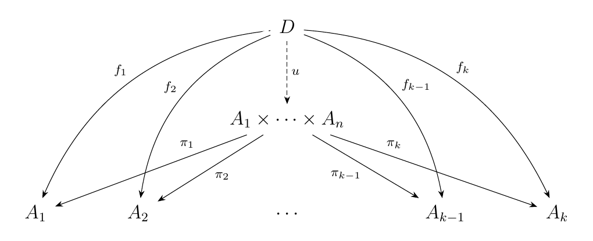
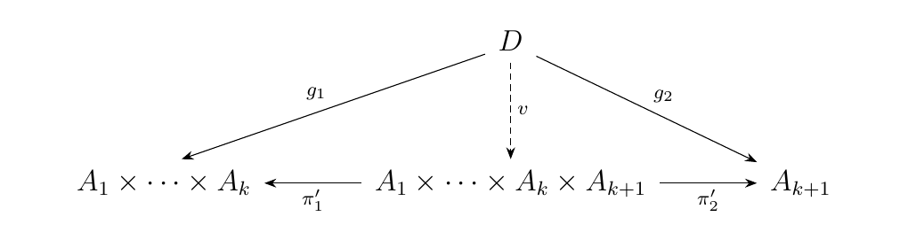
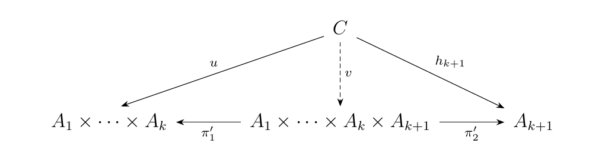
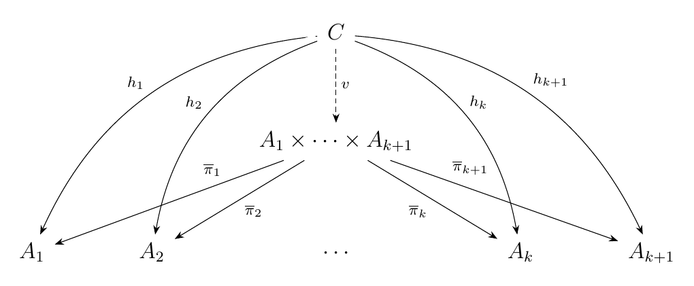
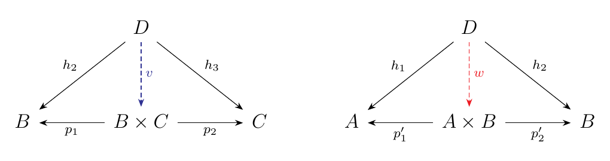
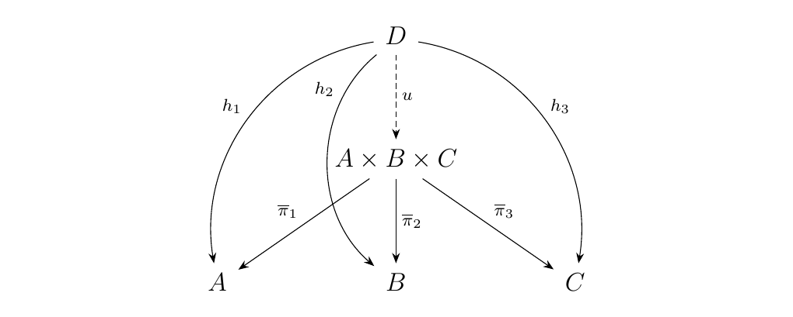
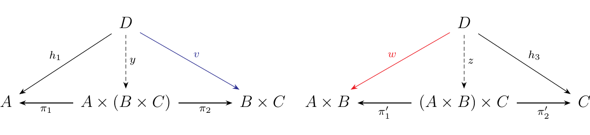
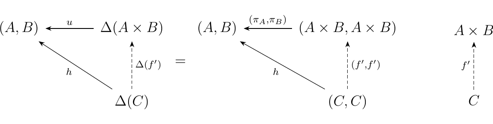

3.3. Finite Products
In this section we will discuss products in categories, which will be our first encounter with the concept of a limit, something which has yet to be defined. The concept of a limit, and the dual concept of a colimit, form one of the central concepts of category theory. It will turn out that both the limit and colimit concepts are a special case of a universal morphism.
Let \((G, \textcolor{NavyBlue}{\bigcdot})\) and \((H, \textcolor{Orange}{\bigcdot})\) be two groups with group operations $\textcolor{NavyBlue}{\bigcdot}: G \times G \to G $ and \(\textcolor{Orange}{\bigcdot}: H \times H \to H\). The product group of \(G,H\) is the group
whose group product works as
One may check that this construction satisfies the definition of a group.
If \(G, H\) are abelian groups, then the term "group product" is replaced with the term direct sum (we will explain why later). In this case, the product is denoted \((G \oplus H, \bigcdot)\), and the group operation does not change from above.
Direct sums, or more generally products of groups, are frequently used in group
theory. For example, they are necessary to describe the fundamental theorem
of finite abelian groups, which states that for any finite abelian group \(A\),
there exist primes \(p_1, p_2, \dots, p_n\) and positive integers \(\alpha_1, \alpha_2, \dots, \alpha_n\)
such that
That is, every finite abelian group is the product of cycic groups of a prime-power order.
Let \((X, \tau_X)\) and \((Y, \tau_Y)\) be two topological spaces. Using \(X\) and \(Y\), we can create a topological space \((X \times Y, \tau_{X \times Y})\) where \(\tau_{X\times Y}\) is the product topology. There are many ways of defining this topology, but in the finite case, we can write \(\tau_{X\times Y}\) as
In the way we have presented this, this is actually the box topology, but the reader may recall that they coincide when we take finite products.
In Set, we can always take two sets \(X, Y\) to create
the cartesian product \(X \times Y\) defined as the set
Now consider the following question.
\begin{center}
\begin{minipage}{0.8\textwidth}
Q:
What
is the bare minimum amount of logical data that perfectly characterizes
the above product \(X \times Y\)?
\end{minipage}
\end{center} Well, observe that for such a set, we have two \textbf{projection
functions}
Further, suppose that \(f: Z \to X\) and \(g: Z \to Y\) are two functions. Then there exists a third \(h: Z \to X \times Y\) such that \(p_1\circ h = f\) and \(p_2\circ h = g\). By this description, we can deduce that \(h(z) = (f(z), g(z))\).
Moreover, this \(h\) is unique with respect to \(f\) and \(g\); Showing this is the bulk of Exercise \ref{section:universal_morphisms}.\exerciseCartesianProduct. We now have an answer to our question.
\begin{center} \begin{minipage}{0.8\textwidth} A: The product \(X \times Y\) is characterized by the following data: two projection functions \(p_1: X\times Y \to X, p_2: X \times Y \to Y\), such that for any pair of functions \(f: Z \to X, g: Z \to Y\), there exists a unique third \(h: Z \to X \times Y\) such that diagram \ref{diagram:cartesian_product} commutes. \end{minipage} \end{center}
With the above example in mind, we now introduce our first definition of a product.
[Nice Product Definition.] Let \(\cc\) be a category with objects \(A\) and \(B\). The product of \(A\) and \(B\) is an object \(A \times B\) equipped with morphisms
with the following universal property: For any object \(Z\) of \(\cc\) with morphisms \(f: Z \to A\), \(g: Z \to B\), there exists a unique morphism \(h: Z \to A \times B\) such that the diagram below commutes. \
Note that to utilize the above universal property, one requires a pair of morphisms \(f: Z \to A\) and \(g: Z \to B\). That is, it is not true that, if I have a single morphism \(f: Z \to A\), then there exists a unique \(h: Z \to A \times B\) such that \(\pi_A \circ h = k\). That would be false in many cases.
The above definition is a very nice one. For example, it returns the concepts of products of groups or topological spaces when it is imposed in Grp and Top. However, keep in mind the products don't always exist. For example, it does not work in Fld, the category of Fields (that is, there is no field which satisfies the universal property). We will eventually explain why.
Consider Ring, the category of rings. We can create products in this category as follows: Let \((R, \mathbin{\textcolor{NavyBlue}{+}}, \mathbin{\textcolor{NavyBlue}{\bigcdot}})\) and \((S, \mathbin{\textcolor{Orange}{+}}, \textcolor{Orange}{\bigcdot})\) be two rings with zeros \(0_R, 0_S\) and units \(1_R, 1_S\). Then we may form the product ring of \(R\) and \(S\) to be the ring
where for all pairs \((r_1, s_1)\) and \((r_2, s_2)\) in \(R \times S\), we define the ring operations to behave as
-
\((r_1, s_1) + (r_2, s_2) = (r_1 \mathbin{\textcolor{NavyBlue}{+}} r_2, s_1 \mathbin{\textcolor{Orange}{+}} s_2)\)
-
\((r_1, s_1)\mathbin{\bigcdot} (r_2, s_2) = (r_1 \mathbin{\textcolor{NavyBlue}{\bigcdot}} r_2, s_1 \mathbin{\textcolor{Orange}{\bigcdot}} s_2)\)
Note that with these requirements, the additive identity is \((0_R, 0_S)\) while the multiplicative identity is \((1_R, 1_S)\). With this construction, one can show that this satisfies the universal property of a product in Ring, so that Ring has products.
We make an interesting observation from the last example. For our ring \((R \times S, +, \bigcdot)\), we surely have that \((0_R, 1_S)\) and \((1_R, 0_R)\) are elements of the product ring. However,
Hence, even if the rings \(R\) and \(S\) are integral domains, \(R \times S\) is not an integral domain. Thus the product of two rings is never an integral domain.
Consider the category of fields Fld. Let \(F_1, F_2\) be fields. Then we would expect that the ring
to be the "product field." But we just observed that this cannot be a field because the product ring is not even an integral domain.
However, this does not exclude the possibility that there is some kind of other field construction which we are not considering that plays the role as a product in Fld. We show that such a construction cannot hold for all fields with the following simple example.
Consider the fields \(\mathbb{F}_2\) and \(\mathbb{F}_3\), the fields with 2 and 3 elements, respectively. Suppose that \(P\) is the product field of \(\mathbb{F}_2\) and \(\mathbb{F}_3\). Then by definition, we would require two projection field homomorphisms
However, recall that two fields share a (nonzero) field homomorphism if and only if they are of the same characteristic. Therefore,
-
\(\pi_1\) can only exist if \(P\) has characteristic 2. In fact, \(P\) must be isomorphic to \(\mathbb{F}_2\).
-
\(\pi_2\) can only exist if it has characteristic 3. In fact, \(P\) must be isomorphic \(\mathbb{F}_3\).
Clearly, we have a contradiction. Thus we simply cannot generally take products in \(**Fld**\) in a logical way.
From the previous example, we see that products don't always exist in category. However, if they do, then we can take finitely many products. For instance, if we have three objects \(A, B, C\), then we can take the products
If we have four objects, then we can create 5 products. Thus, if we can take the product of two objects, then we all finite products consisting of objects of \(\cc\) exist in our category.
We encapsulate this idea and include other prerequisites for a category to have finite products in the following proposition.
Suppose \(\cc\) is a category with a terminal object \(T\) and a product object \(A \times B\) for every pair of objects \(A\) and \(B\). Then \begin{description} \item[\(\bm{(i)}\)] \(\cc\) has finite products. \item[\(\bm{(ii)}\)] There exists a bifunctor \(\prod: \cc \times \cc \to \cc\) where \((A, B) \mapsto A \times B\).
\item[\(\bm{(iii)}\)] For any three objects, we have an isomorphism
which is natural in \(A, B\) and \(C\) .
\item[\(\bm{iv}\)] For any object \(A\), we have the isomorphism
natural in \(A\). \end{description}
To prove the first part, let \(P(n)\) be the following statement:
\begin{description} \item[Base Case.] Observe that for \(n = 0\), the statement is automatically true since we are given that a terminal object \(T\) exists.
\item[Inductive Step.] Suppose the statement holds for \(n = k\). Then for any objects \(A_1, A_2, \cdots, A_k\), we have the product diagram \  and a unique, induced arrow \(u\) whenever such a \(D \in \cc\) with morphisms \(f_i: D \to A_i\) exists.
Let \(A_{k+1}\) be an arbitrary object of \(\cc\). Then the
product \((A_1 \times A_2 \times \cdots \times A_k)\times
A_{k+1}\) exists, since by assumption,
the product of any two objects in our
category must exist, and gives rise to the product diagram:
\

whenever such an object \(D\) with a family of morphisms \(g_1: D
\to A_1 \times A_k\) and \(g_2: D \to A_{k+1}\) exist.
Look at the bottom of the second diagram; we have a unique morphism \(\pi'_1: A_1 \times \cdots \times A_k \times A_{k+1} \to A_1 \times \cdots \times A_k\). We can extend this across the morphisms \(\pi_1, \pi_2 \cdots, \pi_k\) to demonstrate that there exist unique morphisms
for \(i = 1, 2, \dots, k\). Denote these as \(\overline{\pi}_i\).
Now suppose we there exists an object \(C\) in \(\cc\) with a family of morphisms \(h_i: C \to A_i\). Then by the first diagram, there exists a unique morphism \(u: C \to A_1 \times \cdots \times A_k\) such that \(h_i = \pi_i \circ u\). Thus we have the diagram: \ 
so we have a unique morphism \(v: C \to A_1 \times \cdots \times A_{k+1}\) such that \(\pi'_1 \circ v = u\) and \(\pi'_2 \circ v = h_{k+1}\). However, note that
for \(i = 1, 2, \dots, k\).
Now let \(\overline{\pi}_{k+1} = \pi'_2\). Then we see that for such a family \(h_i: C \to A_i\) for \(i = 1, 2, \dots, k+1\), there exists a unique morphism \(v: C \to A_1 \times \cdots \times A_{k+1}\) such that
for \(i = 1, 2, \dots, k + 1\). Therefore, we have the product diagram \  so that the product \(A_1 \times A_k \times A_{k+1}\) exists and is well-defined in \(\cc\). Hence, \(P(n)\) is true for \(n = k+1\). \end{description} By mathematical induction, we see that all finite products must exist in \(\cc\), as desired.
To demonstrate the existence of a bifunctor, we can directly define one. Let \(\prod: \cc \times \cc \to \cc\) act as follows. \begin{description} \item[Objects.] \(\prod(A, B) = A \times B\). \item[Morphisms.] Let \(f: A \to A'\) and \(g: B \to B'\). Suppose we have canonical projections
and
Then observe we get the diagram \ Thus, there exists a unique morphism \(u: A \times B \to A' \times B'\) whenever such \(f, g\) exist. Therefore, we can define how \(\prod\) acts on morphism as
where \(u\) is generated by the diagram above. As we just showed, this assignment is well-defined. It's now pretty straightforward to now show that this establishes a functor (and I'm too lazy to do so).
To establish associativity of our products, we demonstrate they're isomorphic. Thus let \(A \times (B \times C)\) and \((A \times B) \times C\) be two products in \(\cc\). Suppose we have an family of morphisms \(h_1: D \to A\), \(h_2: D \to B\) and \(h_3: D \to C\). Then we get the following product diagrams.
\begin{minipage}{0.5\textwidth} \  \end{minipage} \begin{minipage}{0.5\textwidth} \  \end{minipage} Since we have unique morphisms \(v: D \to B \times C\) and \(w: D \to A \times B\), we also get the product diagrams. \  for the products \(A \times (B \times C)\) and \((A \times B) \times C\), respectively. Thus we have the collection of morphisms
Now observe that
Thus we see that our first collection of morphisms are projections. That is, for any family of morphisms \(h_1: D \to A\), \(h_2: D \to B\) and \(h_3: D \to C\), there exists unique morphisms such that equations \(y, z\) such that equations (3), (4) and (5) hold. What this means is that \(A \times (B \times C)\) and \((A \times B) \times C\) are universal objects; specifically, they form universal cones. However, the original universal cone of this construction was simply \(A \times B \times C\) with the morphisms \(\overline{\pi}_1, \overline{\pi}_2, \overline{\pi}_3\). Thus we have that
since universal objects of the same construction are isomorphic. Showing naturality is not hard (again, too lazy to do that).
Finally, let \(T\) be the terminal object of \(\cc\). Denote \(t_C: C \to T\) as the unique morphism from \(C\) to \(T\). Now consider the product diagram associated with the product \(T \times A\): \ Observe that \(t_D\) always exists for any \(D\). Hence the existence of \(u\) is completely dependent \(f\). Therefore, we can see that this diagram is equivalent to \ Hence we see that \(A\) with the morphism \(t_A, 1_A\) forms a universal cone. But so does \(T \times A\); hence, uniqueness guarantees they are isomorphic. \end{description}
Now that we have discussed examples of products in categories, offered a rigorous definition, and we observed an example when they do not exist, we would naturally want to generalize this concept since it is often the case that we would like to take arbitrary products, or even infinite products. We also want to somehow connect products to a universal morphism. To do all of these things requires us to further abstract our definition of a product. Before doing so, we offer a simple definition.
Let \(\cc\) be a category. Define the diagonal functor of \(\cc\) as \(\Delta: \cc \to \cc \times \cc\) where \begin{description} \item[On Objects.] For \(C\) an object of \(\cc\), we define \(\Delta(C) = (C, C)\). \item[On Morphisms.] For a morphism \(f: A \to B\), we define \(\Delta(f) = (f, f): (A, A) \to (B, B)\). \end{description}
The above functor is a bit silly; it really doesn't do much. However, it necessary for us to really understand what exactly a product is. It helps us realize that a product in a category is actually a universal morphism.
\begin{definition}[Rigorous Product Definition.] Let \(\cc\) be a category with objects \(A, B\). The product \(A \times B\) of \(A\) and \(B\) is a universal morphism
from \hyperref[definition:universal_morphism_from_F_to_D]{\textcolor{blue}{\(\Delta\) to \((A, B)\)}}. This means that for any other pair \((C, q: \Delta(C) \to (A, B))\), there exists a unique \(h: C \to A \times B\) in \(\cc\) such that the diagram below commutes. \ end{definition}
This definition is exactly equivalent to our previous. What this tells us is that a product is an instance of a universal morphism. We show how this definition is equivalent to the previous via the following example.
To see this for the case when \(n = 2\), consider the product \(A\times B\) of two objects \(A, B\) in some category \(\cc\). Then \  Let's spell out what's going on above; you might have seen this exposition, without even realizing, demonstrating the universality of products. Suppose there exists another object \(C\) with morphisms \(f: C \to A\) and \(g: C \to B\). Then we force the existence of a morphism \(f': C \to A \times B\). \ When we usually do this, we simply just set
so that \(\pi_A \circ f' = f\), and \(\pi_B \circ f' = g\).